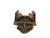

| Resource page for ieee-pilot 1.9 |  | 27 Sep 2016 |
Reference implementation of IEEE Pilot, a CAI language.
This is an implementation of the very old (1962) CAI language Pilot, as described by IEEE Std 1154-1991, ISBN 1-55937-151-X.
| README | roadmap file |
| TODO | to-do file |
| NEWS | project news |
| COPYING | project license |
| ieee-pilot-1.9.tar.gz | gzipped source tarball |
| ieee-pilot-1.9.md5 | source tarball MD5 checksum |
| pilotconv.html | HTML rendering of pilotconv.1 |
| pilot.html | HTML rendering of pilot.1 |
The project repository is at https://gitlab.com/esr/ieee-pilot.
If you appreciate this code (and especially if you make money by using it) please support me on Patreon.
Forward-port to modern C, Bison, and Flex by Frank J. Lhota. Rename stdconv to pilotconv for namespace politeness.